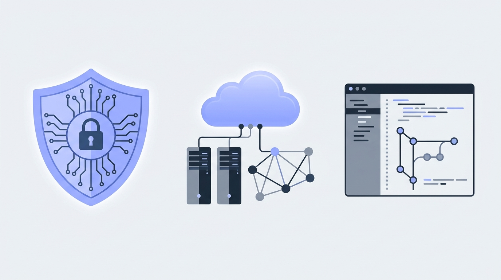

1. SOC Analyst (Tier 1)
Monitors security alerts in a Security Operations Centre, investigates suspicious logins or phishing reports, analyses logs and escalates confirmed incidents.
Subtopic 1
An introduction to the roles open to ICT and Cybersecurity graduates and the skills each one asks for.
ICT and Cybersecurity degrees open doors to several distinct tracks. Knowing what each role does day to day helps you pick the right internships, highlight the right university labs on your CV and focus your preparation before graduation.

Monitors security alerts in a Security Operations Centre, investigates suspicious logins or phishing reports, analyses logs and escalates confirmed incidents.
Configures and maintains routers, switches, VLANs, VPNs, firewalls and cloud virtual networks to keep an organisation connected and secure.
Builds, tests and maintains web applications, internal tools and APIs. Works with front-end interfaces, databases, version control and secure coding practices.
Runs authorised vulnerability assessments and web/network tests under supervision, then writes clear reports explaining how to fix each finding.
Manages user accounts, Active Directory, operating systems and hardware/software troubleshooting. A common and valuable entry point into enterprise IT.
Supports Governance, Risk and Compliance teams with security policies, risk registers, audits and alignment with standards such as ISO/IEC 27001.
You do not need every certification before applying for an internship, but understanding which foundational topics belong to each track helps you study with purpose:
| Role | Core technical skills | Useful lab tools & projects | Foundational certs (optional) |
|---|---|---|---|
| SOC Analyst | TCP/IP, log analysis, phishing triage, OS fundamentals | Wireshark packet analysis, SIEM home lab (Wazuh / Splunk) | CompTIA Security+, BTL1, Cisco CyberOps |
| Network / Cloud Engineer | Routing, switching, subnetting, VLANs, firewall rules, DNS/DHCP | Cisco Packet Tracer topologies, Linux server & cloud VPC setup | Cisco CCNA, CompTIA Network+, AWS Cloud Practitioner |
| Software / Web Developer | HTML5/CSS3, JavaScript, Python or C#, SQL, Git version control | Responsive web apps, REST APIs, database-driven projects on GitHub | GitHub Foundations, Microsoft / Meta developer certificates |
| Systems & IT Support | Windows & Linux administration, Active Directory, ticketing, hardware | VirtualBox domain controller lab, PowerShell / Bash automation scripts | CompTIA A+, Microsoft MD-102 / AZ-900 |
| GRC Analyst | Risk assessment, security controls, policy writing, audit preparation | Writing a sample risk register or security policy for a case study | ISO/IEC 27001 Foundation, ISC2 CC |
Select the activity you enjoy most in your coursework to see a recommended starting track and which skills to emphasise on your CV.
About this content: role descriptions and skill summaries on this page are general educational guidance written by the project team. Certificate names (CompTIA, Cisco, AWS, Microsoft, ISC2, ISO) are referenced as industry examples; always check specific employer job descriptions.